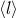

diam1
Table of Contents
1 Intro
\section{Introduction}
1.1 Why study the diameter of random clusters?
1.1.1 Determines efficiency of cluster algorithms
1.1.2 Unexplored geometric property of random clusters
1.1.3 Places bounds on communication of processes in a network
1.1.4 Comparison to previous studies of the chemical distanc
1.2 Potts Model
1.2.1 The Model
1.2.2 Connection to Random Cluster Model
1.3 Predictions for behavior of the diameter
1.3.1 Mean field expectations
- Upper critical dimensions for perc, Ising, three-state (with refs)
- Work of Nachmias and Peres
1.3.2 dmin = 1.0 for q>5
1.4 Swedsen Wang Algorithm
1.4.1 See Sokal's description
1.5 Measuring the Chemical Distance and the diameter
1.5.1 Methods in the literature
1.5.2 Our methods
2 Simulation Details
2.0.1 Range of L, 16 to 128
2.0.2 Initial configuration random; discard first 105 iterations
2.0.3 Compare discard interval with autocorrelation time
2.0.4 Total run length for all systesm
2.0.5 Each data set consists of several runs combined
2.1 Chemical Distance and Diameter measurements
The average chemical distance  for each lattice size $L$ was determined in the following manner. The largest cluster in the lattice was identified, and a randomly chosen site $A$ on this cluster was used as the initial seed for a Leath growth (CITE) process, which amounts to a breadth-first growth along cluster bonds. Each iteration $i$ of the Leath growth process covers all sites at chemical shell $i$; once the Leath process has covered all $N$ sites in the cluster, the chemical distance $l$ between the seed site, $A$, and any other site, $B$, is thus equal to the chemical shell on which site $B$ resides. We chose $B$ at random from the sites on the largest possible chemical shell reached from site $A$ on the cluster. The chemical distance between $A$ and $B$ chosen in this manner was then averaged over the largest cluster in all of the lattice realizations considered.
2.1.1 This is not what I was thinking.
2.2 Simulation details
2.2.1 autocorrelation time
2.2.2 scaling methods
3 Results
\section{Results}
3.1 Table of results
3.2 Discussion of q=1 and 2
3.3 Discussion of q=3,4,5,
Author: Don Blair
<dwblair@dwb.local>
Date: 2008/05/21 09:57:46